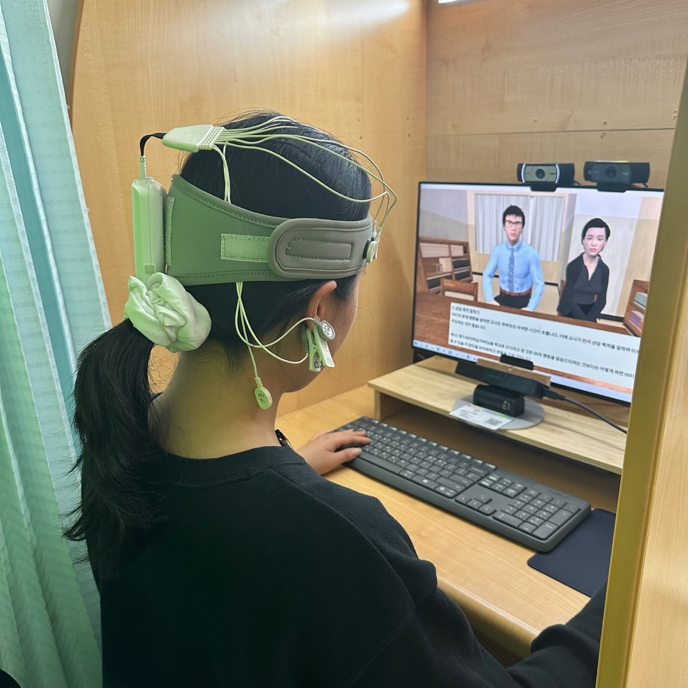

📷
assets/paper-fea-eeg.jpg
(논문 figure 추가 예정) '" />
First Author
KCI
2023
Use of Facial Expression Analysis and EEG to Analyze Cognitive Load and Emotion of Learners in Virtual Simulation
Kim, K., Yang, E., Ryu, J., & Lim, T.
Korean Journal of Educational Methodology (교육방법연구), 35(2), 197–221
Research Question
How do learners' cognitive load and emotion dynamically change across the stages of a virtual parent–teacher conference simulation, when measured in real time via multimodal physiological signals?
Method
34 college students experienced a Unity-based parent–teacher conference simulation. Using the iMotions platform, facial expression (blink rate, valence via Affectiva AFFDEX) and EEG (mid-beta 15–20 Hz, frontal alpha asymmetry via Enobio 8) were captured simultaneously. The scenario was segmented into 4 stages and analyzed with repeated-measures ANOVA.
Key Finding
Cognitive load and positive valence followed a converging U-shaped pattern: high during the greeting (stage 1), sharply dropped at problem-behavior discussion (stage 2), and rebounded through stages 3–4. Facial and EEG signals corroborated each other, validating multimodal physiological measurement as a means to capture the dynamic learning experience that post-hoc self-reports cannot.
→ View at DOI
First Author
KCI
2023
The Effect of Conversational Style with Digital Human on Learning Experience of Emotions and Attention
Kim, K., Ryu, J., & Lee, S.
The Korea Educational Review (한국교육학연구), 29(3), 27–49
Research Question
Does the conversational style of a digital human (social-oriented vs. task-oriented) shape the user's persona perception, emotional experience, and attention during interaction?
Method
45 adults engaged in both social- and task-oriented dialogues with a digital human (built in iClone 7 with live facial macup and Voxer voice modulation). Persona perception was surveyed (facilitation, credibility, human-likeness, engagement). Emotion (valence, emotional engagement via Affectiva AFFDEX) and attention (fixation duration via Aurora eye tracker, blink rate) were captured through iMotions. Repeated-measures ANOVA was applied.
Key Finding
Counter to the assumption that task-focused conversation drives stronger engagement, the social-oriented dialogue produced significantly higher engagement, more positive valence, longer fixation, and fewer blinks (= higher attention). Social cues from a digital human do not distract — they deepen the user's emotional and attentional commitment, with direct implications for learning experience design (LXD).
→ View at DOI